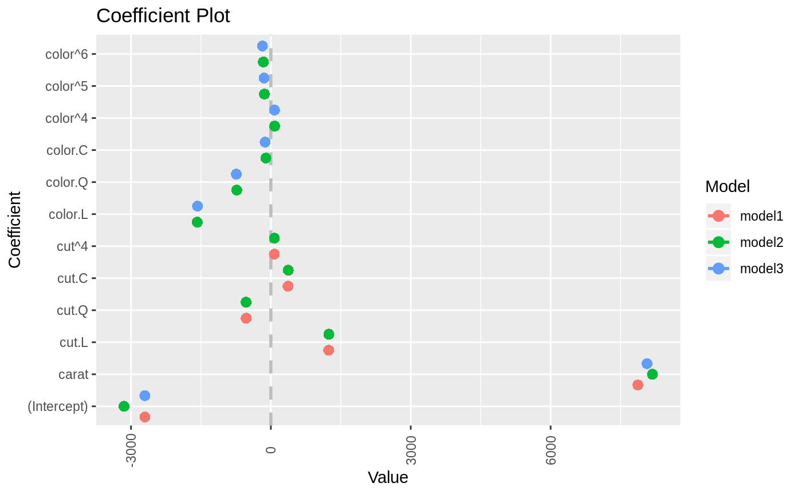
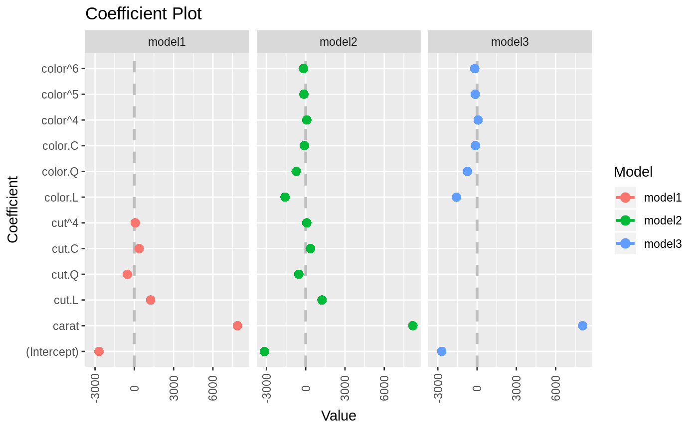
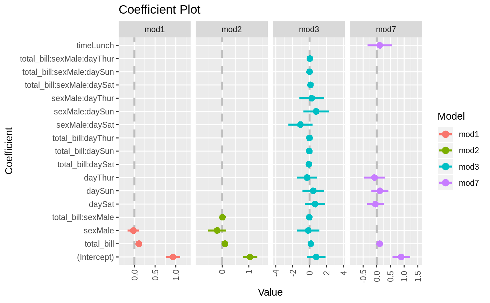
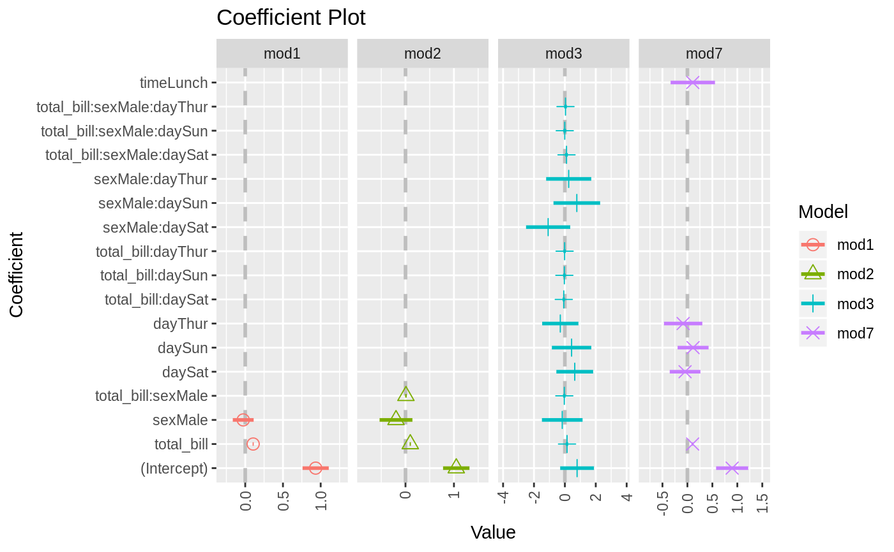
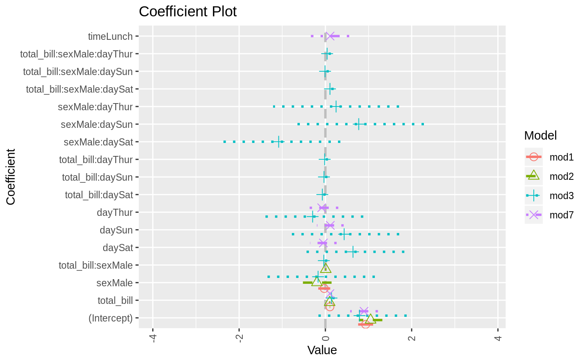
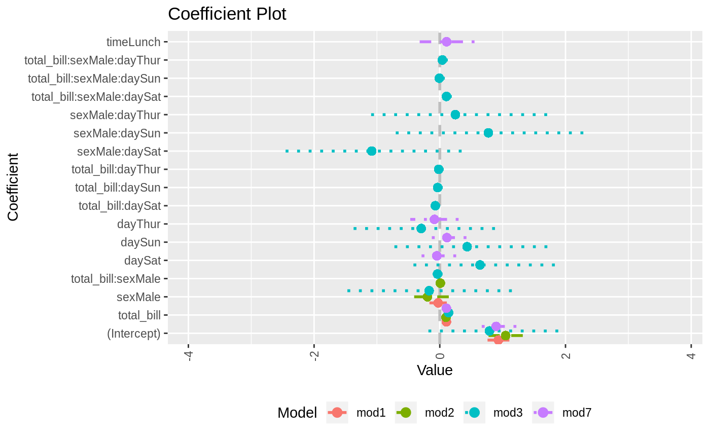
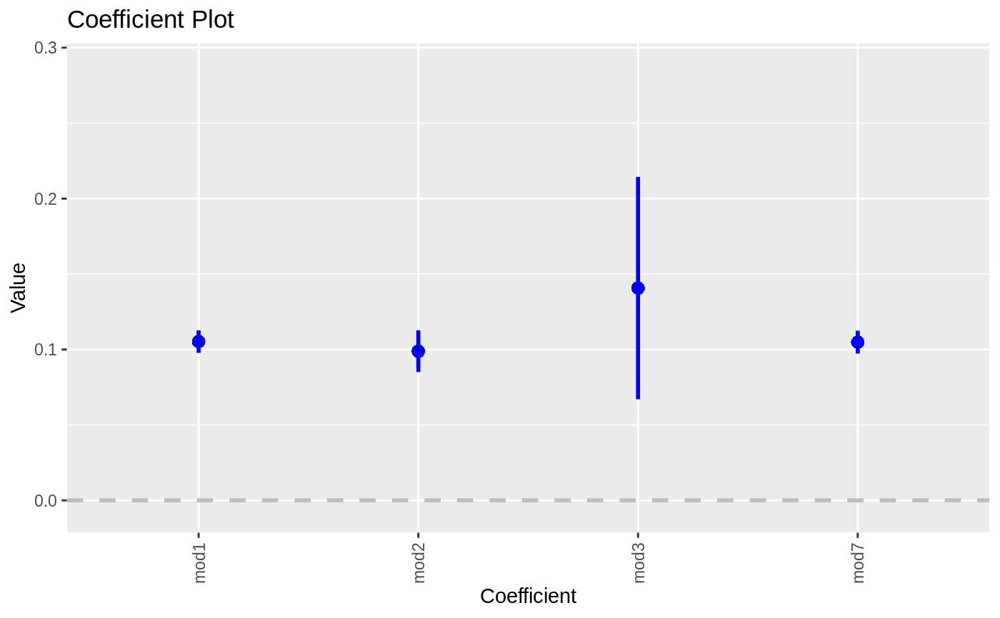
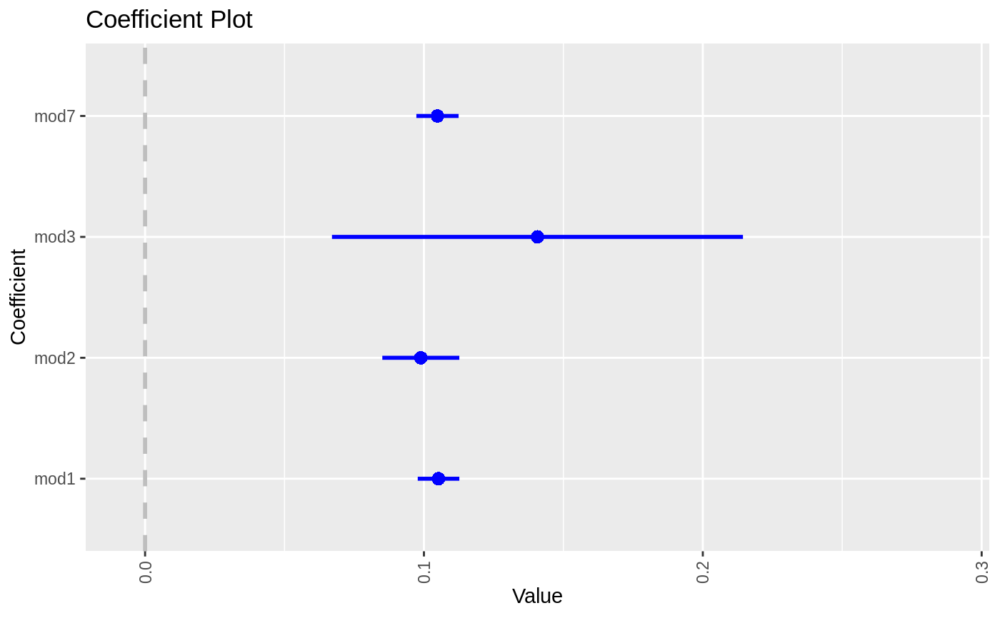

multiplot.RdPlot the coefficients from multiple models
multiplot(..., title = "Coefficient Plot", xlab = "Value", ylab = "Coefficient", innerCI = 1, outerCI = 2, lwdInner = 1, lwdOuter = 0, pointSize = 3, dodgeHeight = 1, color = "blue", shape = 16, linetype = 1, cex = 0.8, textAngle = 0, numberAngle = 90, zeroColor = "grey", zeroLWD = 1, zeroType = 2, single = TRUE, scales = "fixed", ncol = length(unique(modelCI$Model)), sort = c("natural", "normal", "magnitude", "size", "alphabetical"), decreasing = FALSE, names = NULL, numeric = FALSE, fillColor = "grey", alpha = 1/2, horizontal = FALSE, factors = NULL, only = NULL, shorten = TRUE, intercept = TRUE, interceptName = "(Intercept)", coefficients = NULL, predictors = NULL, strict = FALSE, newNames = NULL, plot = TRUE, drop = FALSE, by = c("Coefficient", "Model"), plot.shapes = FALSE, plot.linetypes = FALSE, legend.position = c("right", "left", "bottom", "top", "none"), secret.weapon = FALSE, legend.reverse = FALSE, trans = identity)
| ... | Models to be plotted |
|---|---|
| title | The name of the plot, if NULL then no name is given |
| xlab | The x label |
| ylab | The y label |
| innerCI | How wide the inner confidence interval should be, normally 1 standard deviation. If 0, then there will be no inner confidence interval. |
| outerCI | How wide the outer confidence interval should be, normally 2 standard deviations. If 0, then there will be no outer confidence interval. |
| lwdInner | The thickness of the inner confidence interval |
| lwdOuter | The thickness of the outer confidence interval |
| pointSize | Size of coefficient point |
| dodgeHeight | Amount of vertical dodging |
| color | The color of the points and lines |
| shape | The shape of the points |
| linetype | The type of line drawn for the standard errors |
| cex | The text size multiplier, currently not used |
| textAngle | The angle for the coefficient labels, 0 is horizontal |
| numberAngle | The angle for the value labels, 0 is horizontal |
| zeroColor | The color of the line indicating 0 |
| zeroLWD | The thickness of the 0 line |
| zeroType | The type of 0 line, 0 will mean no line |
| single | logical; If TRUE there will be one plot with the points and bars stacked, otherwise the models will be displayed in separate facets |
| scales | The way the axes should be treated in a faceted plot. Can be c("fixed", "free", "free_x", "free_y") |
| ncol | The number of columns that the models should be plotted in |
| sort | Determines the sort order of the coefficients. Possible values are c("natural", "magnitude", "alphabetical") |
| decreasing | logical; Whether the coefficients should be ascending or descending |
| names | Names for models, if NULL then they will be named after their inputs |
| numeric | logical; If true and factors has exactly one value, then it is displayed in a horizontal graph with continuous confidence bounds. |
| fillColor | The color of the confidence bounds for a numeric factor |
| alpha | The transparency level of the numeric factor's confidence bound |
| horizontal | logical; If the plot should be displayed horizontally |
| factors | Vector of factor variables that will be the only ones shown |
| only | logical; If factors has a value this determines how interactions are treated. True means just that variable will be shown and not its interactions. False means interactions will be included. |
| shorten | logical or character; If |
| intercept | logical; Whether the Intercept coefficient should be plotted |
| interceptName | Specifies name of intercept it case it is not the default of "(Intercept"). |
| coefficients | A character vector specifying which factor coefficients to keep. It will keep all levels and any interactions, even if those are not listed. |
| predictors | A character vector specifying which coefficients to keep. Each individual coefficient can be specified. Use predictors to specify entire factors |
| strict | If TRUE then predictors will only be matched to its own coefficients, not its interactions |
| newNames | Named character vector of new names for coefficients |
| plot | logical; If the plot should be drawn, if false then a data.frame of the values will be returned |
| drop | logical; if TRUE then models without valid coefficients to show will not be plotted |
| by | If "Coefficient" then a normal multiplot is plotted, if "Model" then the coefficients are plotted along the axis with one for each model. If plotting by model only one coefficient at a time can be selected. This is called the secret weapon by Andy Gelman. |
| plot.shapes | If |
| plot.linetypes | If |
| legend.position | position of legend, one of "left", "right", "bottom", "top", "none" |
| secret.weapon | If this is |
| legend.reverse | Setting to reverse the legend in a multiplot so that it matches the order they are drawn in the plot |
| trans | A transformation function to apply to the values and confidence intervals. |
A ggplot object
Plots a graph similar to coefplot but for multiple plots at once.
For now, if names is provided the plots will appear in alphabetical order of the names. This will be adjusted in future iterations. When setting by to "Model" and specifying exactly one variable in variables that one coefficient will be plotted repeatedly with the axis labeled by model. This is Andy Gelman's secret weapon.
link{coefplot}
data(diamonds) model1 <- lm(price ~ carat + cut, data=diamonds) model2 <- lm(price ~ carat + cut + color, data=diamonds) model3 <- lm(price ~ carat + color, data=diamonds) multiplot(model1, model2, model3)multiplot(model1, model2, model3, single=FALSE)multiplot(model1, model2, model3, plot=FALSE)#> Value Coefficient HighInner LowInner HighOuter LowOuter #> 1 -2701.37602 (Intercept) -2685.94495 -2716.80710 -2670.51387 -2732.23818 #> 2 7871.08213 carat 7885.06176 7857.10251 7899.04139 7843.12288 #> 3 1239.80045 cut.L 1265.90049 1213.70040 1292.00054 1187.60036 #> 4 -528.59779 cut.Q -505.46541 -551.73018 -482.33302 -574.86257 #> 5 367.90995 cut.C 388.12410 347.69579 408.33826 327.48164 #> 6 74.59427 cut^4 90.83386 58.35469 107.07344 42.11510 #> 7 -3149.81846 (Intercept) -3134.06187 -3165.57504 -3118.30528 -3181.33163 #> 8 8183.74295 carat 8197.63996 8169.84595 8211.53696 8155.94894 #> 9 1243.35134 cut.L 1268.08969 1218.61298 1292.82805 1193.87462 #> 10 -531.75088 cut.Q -509.82486 -553.67689 -487.89885 -575.60291 #> 11 372.05517 cut.C 391.21638 352.89396 410.37759 333.73275 #> 12 76.15453 cut^4 91.54283 60.76622 106.93114 45.37792 #> 13 -1579.17014 color.L -1557.44800 -1600.89228 -1535.72587 -1622.61442 #> 14 -732.84999 color.Q -712.99047 -752.70952 -693.13094 -772.56905 #> 15 -107.40714 color.C -88.76901 -126.04527 -70.13088 -144.68339 #> 16 81.63107 color^4 98.74669 64.51546 115.86230 47.39984 #> 17 -138.64340 color^5 -122.46129 -154.82550 -106.27919 -171.00760 #> 18 -161.08789 color^6 -146.40797 -175.76780 -131.72806 -190.44771 #> 19 -2702.23261 (Intercept) -2688.44954 -2716.01569 -2674.66646 -2729.79876 #> 20 8066.62302 carat 8080.66272 8052.58332 8094.70242 8038.54362 #> 21 -1572.19930 color.L -1549.88115 -1594.51745 -1527.56300 -1616.83560 #> 22 -741.14453 color.Q -720.74595 -761.54312 -700.34736 -781.94170 #> 23 -122.69603 color.C -103.55099 -141.84107 -84.40594 -160.98612 #> 24 78.76541 color^4 96.34799 61.18283 113.93057 43.60025 #> 25 -144.74008 color^5 -128.11696 -161.36321 -111.49383 -177.98634 #> 26 -180.74716 color^6 -165.66921 -195.82511 -150.59126 -210.90306 #> Model #> 1 model1 #> 2 model1 #> 3 model1 #> 4 model1 #> 5 model1 #> 6 model1 #> 7 model2 #> 8 model2 #> 9 model2 #> 10 model2 #> 11 model2 #> 12 model2 #> 13 model2 #> 14 model2 #> 15 model2 #> 16 model2 #> 17 model2 #> 18 model2 #> 19 model3 #> 20 model3 #> 21 model3 #> 22 model3 #> 23 model3 #> 24 model3 #> 25 model3 #> 26 model3require(reshape2)#>data(tips, package="reshape2") mod1 <- lm(tip ~ total_bill + sex, data=tips) mod2 <- lm(tip ~ total_bill * sex, data=tips) mod3 <- lm(tip ~ total_bill * sex * day, data=tips) mod7 <- lm(tip ~ total_bill + day + time, data=tips) multiplot(mod1, mod2, mod3, mod7, single=FALSE, scales="free_x")multiplot(mod1, mod2, mod3, mod7, single=FALSE, scales="free_x")multiplot(mod1, mod2, mod3, mod7, single=FALSE, scales="free_x", plot.shapes=TRUE)multiplot(mod1, mod2, mod3, mod7, single=TRUE, scales="free_x", plot.shapes=TRUE, plot.linetypes=TRUE)multiplot(mod1, mod2, mod3, mod7, single=TRUE, scales="free_x", plot.shapes=FALSE, plot.linetypes=TRUE, legend.position="bottom")# the secret weapon multiplot(mod1, mod2, mod3, mod7, coefficients="total_bill", secret.weapon=TRUE)# horizontal secret weapon multiplot(mod1, mod2, mod3, mod7, coefficients="total_bill", by="Model", horizontal=FALSE)